4. Enviar una tarea¶
En esta práctica aprenderemos, paso a paso, a enviar una tarea en el Aula Virtual.
El primer paso será abrir una sesión de incógnito del navegador Chrome.
Hacemos clic con el botón derecho del ratón en el icono del navegador Chrome:

Logo del navegador Chrome en la barra de herramientas.¶
Y, a continuación, seleccionamos "Nueva ventana de incógnito":
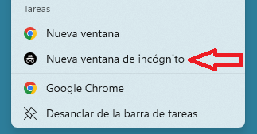
También podemos abrir Chrome y crear una nueva ventana de incógnito pulsando a la vez las tres teclas "Control" + "Shift" + "N".
 +
+ 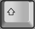
+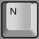
Una vez abierta la ventana de incógnito, buscamos la web de EducaMadrid en la barra de direcciones y hacemos clic en el enlace a EducaMadrid:

Dentro de la web de EducaMadrid, seleccionamos el icono "Aula virtual":
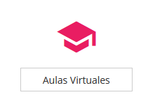
A continuación hacemos clic sobre el botón "Buscador de Aulas Virtuales".
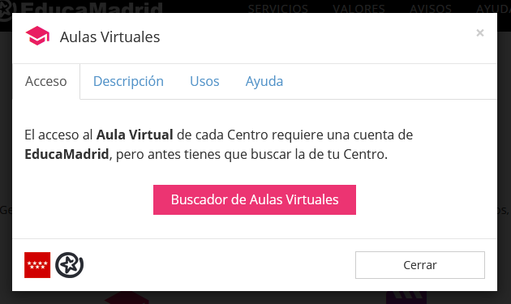
Estos pasos nos llevarán al buscador de Aulas Virtuales de EducaMadrid: www.educa2.madrid.org/educamadrid/aula-virtual/
Dentro del buscador escribimos en el cuadro de búsqueda el nombre de nuestro instituto y aparecerá debajo la lista con las aulas virtuales encontradas.
Hacemos clic en el aula que corresponde con nuestro centro.
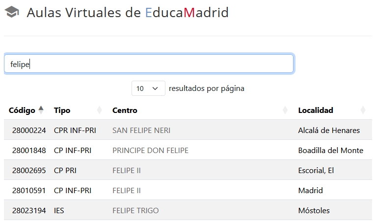
Una vez dentro del Aula Virtual del centro educativo, accederemos con nuestro nombre y contraseña haciendo clic en el enlace "Acceder" que se encuentra arriba a la derecha.
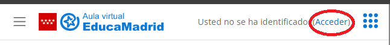
A continuación escribiremos nuestro nombre de usuario y nuestra contraseña de EducaMadrid y hacemos clic en el botón "Acceder":
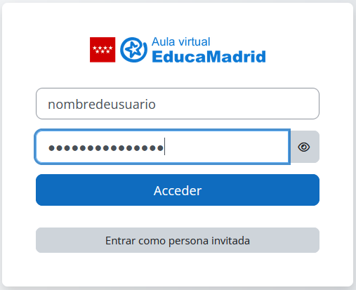
Para poder ver todos los cursos en los que estamos matriculados, hacemos clic en la parte superior de la página en el enlace "Mis cursos".
Si la ventana es pequeña es posible que debamos hacer clic primero en el enlace "Mas" y luego en "Mis cursos".
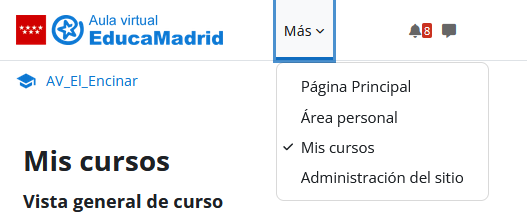
A continuación seleccionamos el curso que nos haya indicado el profesor para entrar en él.
Una vez dentro del curso buscaremos la tarea que se llama "Tarea de prueba" dentro de la primera sección del curso y hacemos clic en ella:
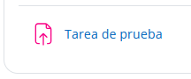
Una vez dentro de la tarea, hacemos clic en el botón "Agregar entrega":
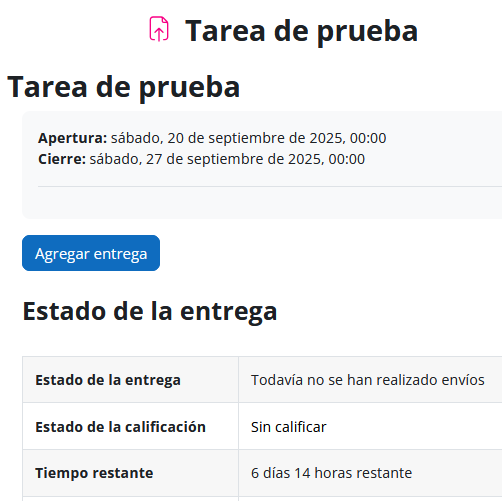
Descarga el siguiente archivo en formato Word en la carpeta de Documentos:
Ahora abre la carpeta donde se encuentra el archivo:
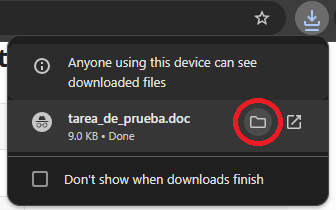
Edita el archivo para añadir tu nombre y tu curso y guárdalo de nuevo.
Ahora arrastramos el documento "tarea_de_prueba.doc" hasta la ventana que se ha abierto al agregar entrega. Si lo hemos arrastrado correctamente, nuestro documento aparecerá en la ventana de agregar entrega y solo tendremos que "Guardar cambios":
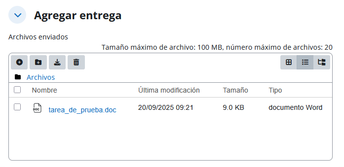
Después de "Guardar cambios" podremos editar la entrega de nuevo, si hemos cometido algún fallo, antes de que el profesor la califique. El aspecto de nuestra entrega debe ser el siguiente:
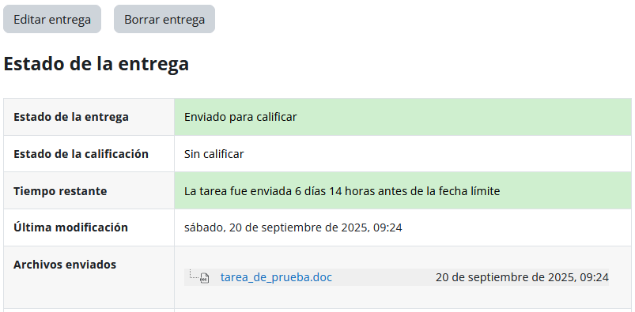
Para finalizar, no olvides salir de la sesión del Aula Virtual. Hacemos clic en el icono con nuestro nombre arriba a la derecha y seleccionamos la última opción: "Cerrar sesión":
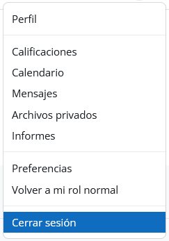